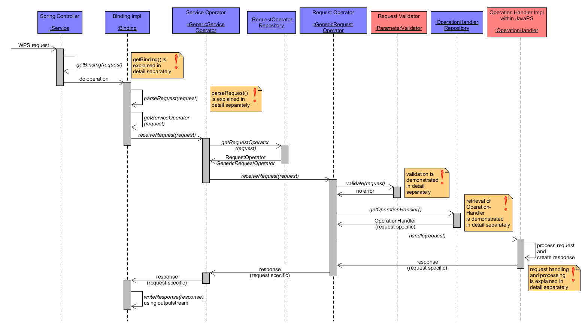
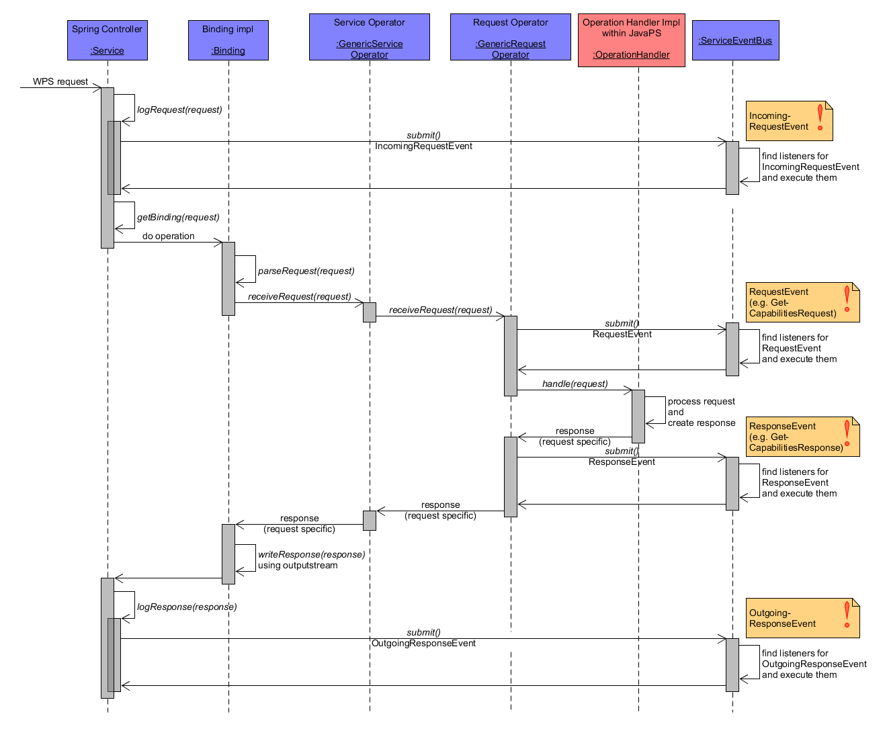
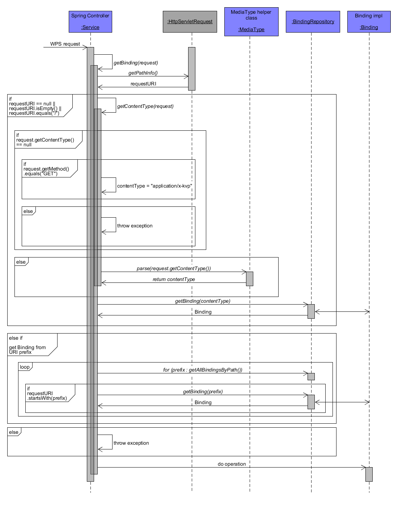
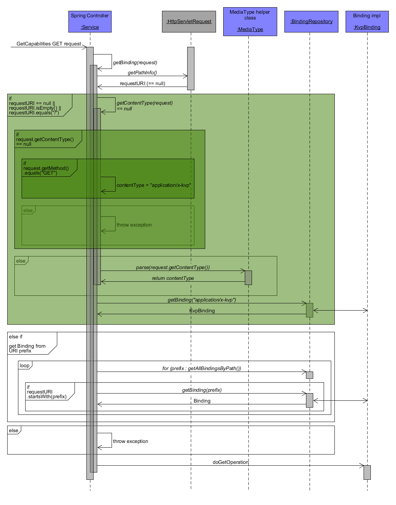
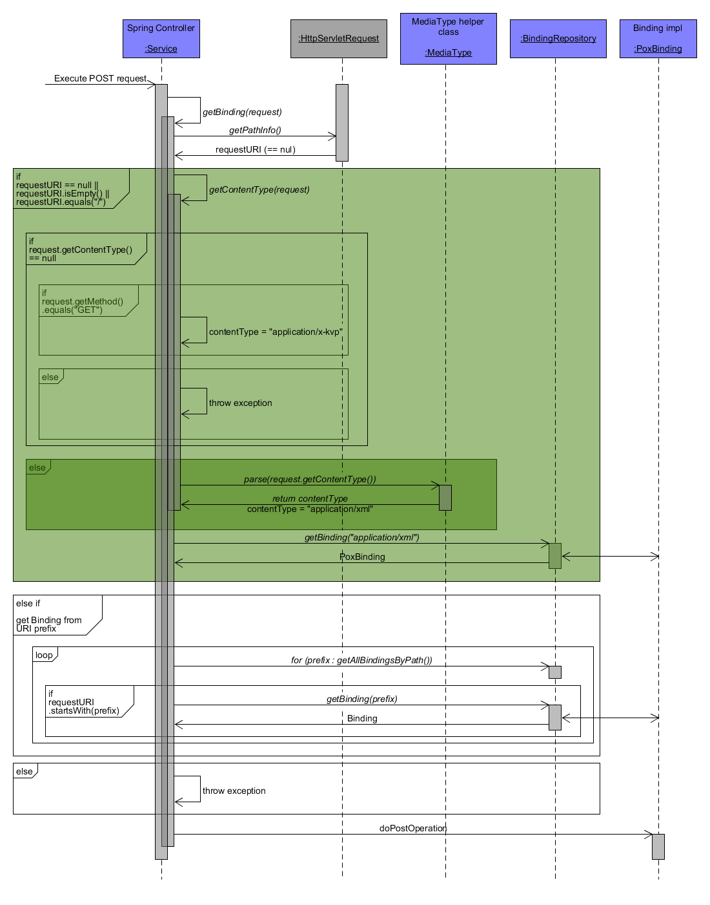
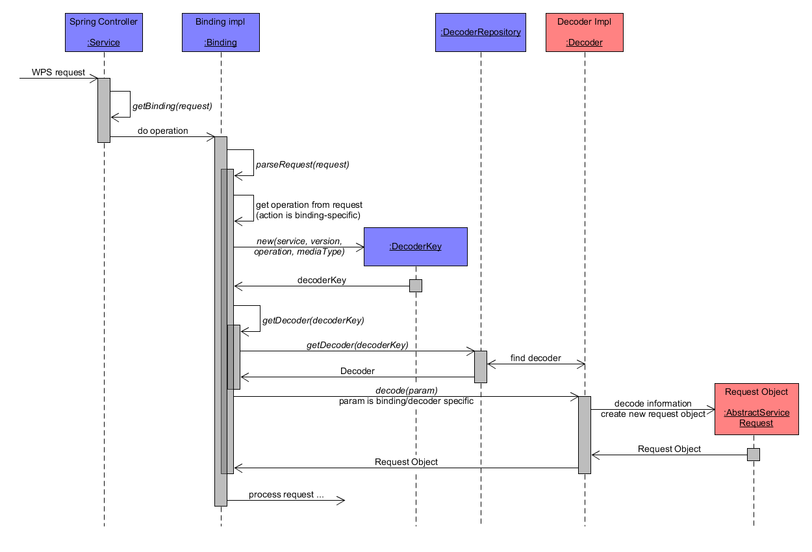
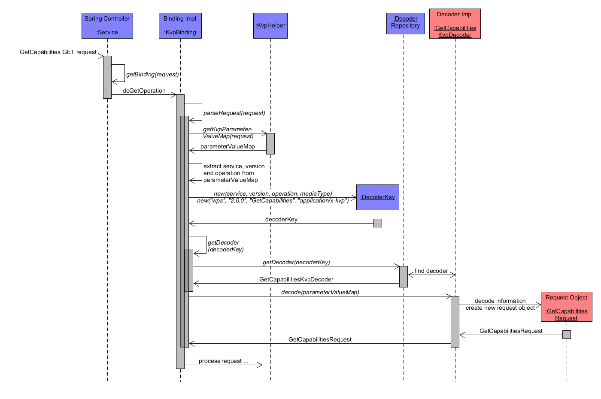
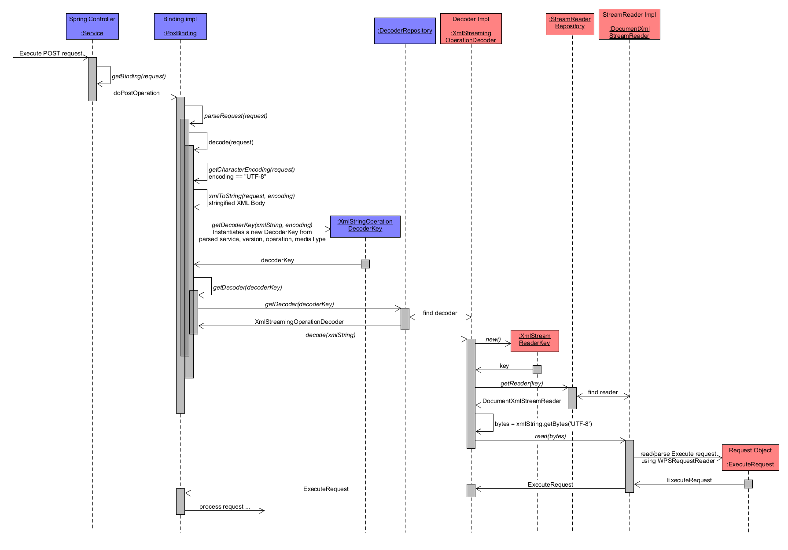
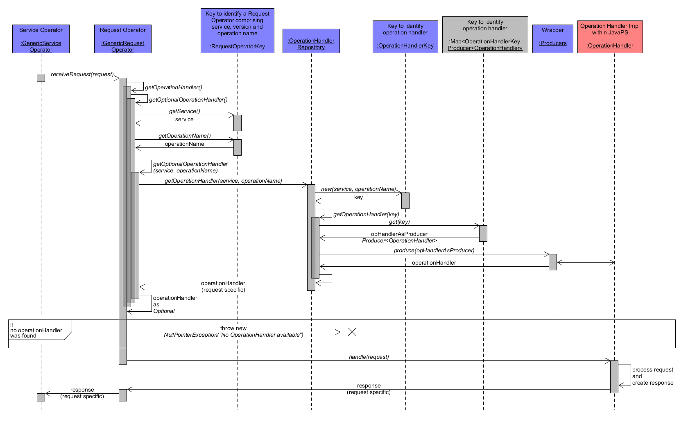

JavaPS Documentation - Generic Workflow from Request to Response
In order to better understand the dynamic relationships between the participating service components this section uses a variety of UML sequence diagrams showing the method workflow during key WPS operations. This section is structured as follows: First, an abstract workflow description from an arbitrary request to its response is demonstrated. Within this description the documentation highlights, how the request binding is determined (Binding in detail) and how the request is parsed (Parsing in detail). The actual implementation of each WPS 2.0 operation (GetCapabilities, DescribeProcess, Execute, GetStatus, GetResult, Dismiss) is introduced on the separate page Workflow of WPS 2.0 operations.
Throughout all sequence diagrams the UML sequence diagram notation is used. In addition, the colours (blue and red) of the participating application components indicate their membership within either JavaPS or Iceland. While blue components belong to Iceland, red components are offered by JavaPS.
General Workflow (abstract Request to Response)
In this section, the workflow and main method calls between key components of JavaPS and Iceland are described in an abstract way. It comprises a generic workflow description, including an overview of service events as well as detailed descriptions of binding identification and request parsing.
Concrete operation workflows with particular focus on request handling are explained in section Workflow of WPS 2.0 operations.
Overview from Request to Response
First a general overview is presented subsequently. It shows the main processing steps and participating components from receiving a request to returning the response.
Generic Workflow
As JavaPS / Iceland is build on Spring, the Service component acts as the central Spring controller, receiving any incoming request. For each WPS request its processing is structured in the following subtasks:
- determine the Binding (e.g. KVP, POX, SOAP, JSON) from the request. This will identify a certain Binding implementation from Iceland. How the Binding is determined is explained in section Identification of Binding in detail.
- call the doXOperation() method from the found Binding component. Here the X indicates that different Binding implementations use different do-operations. E.g. a GET request is usually handled by a KvpBinding component, which offers a doGetOperation() method. Opposite a POST request is handled by a Binding implementation that has a doPostOperation() method.
- the request is parsed and transformed into the associated Request object. The request parsing is explained in section Parsing of a Request in detail.
- determine the service operator that receives the request. Iceland offers a GenericServiceOperator component, which is used for all possible WPS requests. Hence the implementation is kept generic at this point.
- within the receiveRequest() method, the generic service operator fetches an appropriate request operator. Again Iceland offers a generic implementation named GenericRequestOperator that can handle all types of WPS requests. However, as each request requires a different processing from this point onwards, the generic request operator is instantiated with request specific properties. For instance a RequestOperatorKey property stores the parameters service, version and operation name of an incoming request. Based on these properties, GenericRequestOperator is able to determine, which concrete other components are required during the next processing steps described below.
- as next step, the request needs to be validated by the request specific implementation of ParameterValidator, e.g. by performing sanity checks on the delivered parameters or by checking certain values of request parameters. If a request parameter is missing or a non-existent resource is requested, an exception will be thrown. Relying on its request specific properties, the GenericRequestOperator knows, which validating component is responsible for this task. Note that the actual implementation of ParameterValidator is located within JavaPS! The section Workflow of WPS 2.0 operations contains detailed sequence diagrams of the validation process for each WPS operation.
- after successful validation the appropriate operation handler is fetched from the OperationHandlerRepository. For each WPS request/operation (GetCapabilities, DescribeProcess, Execute, GetStatus, GetResult, Dismiss), exactly one implementation of the interface OperationHandler exists. Each comprises a handle() method to perform operation-specific processing steps. The section Identification of Binding in detail describes how Iceland fetches the appropriate OperationHandler.
- the OperationHandler implementation performs the necessary steps to process the request and eventually creates a request/operation specific Response object. Note that the processing steps of each different request greatly vary. Detailed sequence diagrams of the request handling of each WPS operation are included in section Workflow of WPS 2.0 operations.
- finally, the response is forwarded to the Binding component, where it is properly written using output streams and the corresponding binding. This will return the response to the client.
It has to be mentioned, that the diagram simplifies certain processing steps by hiding their complexity. For instance, the Identification of the binding includes several sub-tasks that are not reflected within the diagram. For this reason, some simplified steps are explained more detailed subsequently, comprising the identification of binding and the parsing of requests. Before that, the next paragraph focuses several service events that are triggered during operation handling.
Iceland Service Events throughout Operations
At several workflow points of the operation handling process described above, the Iceland infrastructure fires special events, for which listeners may have registered before. For this reason, Iceland implements a component named ServiceEventBus, which is capable of managing events implementing the interface ServiceEvent. It allows ServiceEventListener components to register to certain ServiceEvents and thus execute associated code once such an event is fired. For instance, some statistics can be managed through associated listeners. The following diagram shows a simplified Workflow diagram from a WPS request to response. In contrast to the previous workflow diagram it contains four additional ServicEvent calls that are triggered for each possible WPS request:
- Upon receival of a new request the Service component submits an IncomingRequestEvent to the ServiceEventBus. This IncomingRequestEvent is a generic event and is independent from a concrete WPS operation.
- The component GenericRequestOperator submits a RequestEvent before forwarding the request to the OperationHandler. A RequestEvent differs for each different WPS operation. It comprises a property request containing the concrete request object (e.g. a GetCapabilitiesRequest for a GetCapabilities operation).
- Once the response is generated, the GenericRequestOperator submits a ResponseEvent, which is also specific for each WPS operation as it comprises a response property that contains the concrete response object (e.g. a GetCapabilitiesResponse for a GetCapabilities operation).
- As soon as the response has been written and send to the client, the Service component submits the final OutgoingResponseEvent.
Service Events
Identification of Binding in detail
Details on how the application determines the binding from the request are described in the following. First, an abstract generic workflow description is presented followed by two concrete examples (KVP Binding Example - GetCapabilities GET Request and POX Binding Example - Execute POST Request).
Generic Workflow - Binding
As mentioned in the previous section, Iceland offers a Binding interface. To determine the appropriate implementation for an incoming request, the content type (also called media type or mime type) is extracted and analysed.
As shown in the sequence diagram, the associated getBinding() method consists of these main sub-tasks:
- get request URI and check if it is null, empty or equals "/".
- depending on the if-, determine the content type of the request or extract the prefix from the request URI.
- identify the appropriate Binding implementation from the BindingRepository.
- call the associated doXOperation() method, where X either stands for Get or Post, depending on the returned binding.
However, the first step is not as simple as it sounds. There are multiple if-cases that have to be resolved, as illustrated in the diagram.
Generic Workflow - Binding
In general, if the request is a GET request, then the content type is set to application/x-kvp indicating that any GET request is associated to a KVP (Key Value Pair) binding. If otherwise it is a POST request then a MediaType object is created from the content type.
To concretize this abstract description, two examples are illustrated below. First an exemplar GET request (KVP binding) is demonstrated followed by an example of a POST request with POX binding.
KVP Binding Example for GET Request
The following diagram is based on the abstract binding-diagram from the previous section but instantiates the participating components to a GetCapabilities GET request. As a consequence, the implementation of the Binding interface is resolved to KvpBinding to handle a GET request. Furthermore, the diagram uses green colour to show the path within the various if-statements.
KVP Binding Example
POX Binding Example for POST Request
In contrast to a GET request, the workflow of a POST request differs. Again the green colour indicates the path within the if-statements. As it is a POST request using a POX (Plain Old XML) binding, the content type ("application/xml") is extracted from the request and used to identify the corresponding Binding implementation, which resolves to PoxBinding.
POX Binding Example
Parsing of a Request in detail
This section focuses on request parsing and presents more detailed workflow diagrams of this specific task. Similar to the detailed description of the binding identification, the presentation starts with a generic and abstract overview followed by two concrete examples (GetCapabilities GET Example and Execute POST Example).
Generic Workflow - Parse Request
Parsing of a request is executed by the Binding component. It analyses the request and fetches a suitable Decoder to parse the request. While the interface Decoder is located within Iceland, its implementations are offered by JavaPS. As main sub-tasks the following actions are performed:
- the WPS operation is determined from the request object.
- with the help of the operation identification and the request media/content type, a new DecoderKey object is created.
- using the DecoderKey, the appropriate Decoder implementation is retrieved from the DecoderRepository.
- via the method decode() of the Decoder, the request is transformed into the suitable instance of AbstractServiceRequest. Note that JavaPS offers exactly one implementation of AbstractServiceRequest for each WPS request/operation.
- after instantiation of the request object it can be processed.
Generic Workflow - Parse Request
The following two sub-sections demonstrate request parsing including a GetCapabilities GET and an Execute POST request.
Capabilities GET Example
A GetCapabilities GET request is parsed by KvpBinding. First the parameter value map is extracted from the request and used to acquire service ("wps"), version ("2.0.0"), operation ("GetCapabilities") and content/media type ("application/x-kvp"). With this information, the DecoderKey is created and used to retrieve the GetCapabilitiesKvpDecoder from the DecoderRepository. Note that this decoder is specialized to handle GetCapabilities GET requests. Via its decoder() method, which receives the parameter value map as argument, a GetCapabilitiesRequest instance is created and returned.
Parse Request - Capabilities GET Example
Execute POST Example with POX Binding
An Execute POST request with POX binding is parsed by PoxBinding. Since the request body is delivered as XML document, the PoxBinding first derives the encoding ("UTF-8") and parses the XML body as String. Via the method getDecoderKey(), which takes the encoding and XML String as arguments, a new XmlStringOperationDecoderKey is created and used to retrieve the XmlStreamingOperationDecoder from the DecoderRepository.
Then this decoder is used to read and parse the Execute request body String. JavaPS is designed to use stream readers to perform this task. It offers the interface StremReader and manages a repository of concrete child classes to parse the information from different formats. E.g. with regard to the XML body String of the request, an associated XmlStreamReaderKey is created to find the DocumentXmlStreamReader that extracts the required information from the XML String and creates an ExecuteRequest instance.
Parse Request - Execute POST Example
Identification of OperationHandler in detail
Another interesting aspect of Iceland's generic infrastructure is the identification of a suitable OperationHandler, which processes a certain type of requests. As described in section Overview from Request to Response, the GenericRequestOperator possesses certain request-specific properties that aid during this step. In particular, it includes a property requestOperatorKey of type RequestOperatorKey storing information about service, version and operation name of an incoming request. The diagram at the end of this section illustrates, how this information is used in order to fetch the correct OperationHandler from the associated OperationHandlerRepository. It comprises the following steps:
- Within its receiveRequest(request) method the GenericRequestOperator delegates the task of fetching the OperationHandler to its internal methods getOperationHander() and getOptionalOperationHandler(). The latter first retrieves the instance of OperationHandler as an Optional object to throw an exception in case no suitable handler is identified (as described in the final point of this list).
- From the aforementioned RequestOperatorKey, the request parameters service and operationName are extracted. While service always has to be set to "WPS" and is thus a constant value for all WPS request within the scope of JavaPS as a Web Processing Service implementation, the parameter operationName carries the operation the client targets. Possible Values are the operation specified in the OGC WPS 2.0 specification, i.e. GetCapabilities, DescribeProcess, Execute, GetStatus, GetResult, Dismiss.
- service and version are then used as parameters when calling the getOperationHander(service, operationName) method of OperationHandlerRepository.
- Amongst others, OperationHandlerRepository comprises a
Map<OperationHandlerKey,Producer<OperationHandler>> operationHandlersproperty that maps an unambiguous OperationHandlerKey to its associated OperationHandler. The latter is wrapped by a Producer. In order to determine the correct OperationHandler, a new instance of OperationHandlerKey is created from both request parameters service and operationName and used to retrieve the associated Producerfrom the Mapobject. In case of an invalid combination of service and operationName, then no handler is found at all. The following table shows the possible combinations and to which handler they are resolved:
Valid combination of parameters "service" and "operationName"
| service | operationName | OperationHandler instance |
|---|---|---|
| WPS | GetCapabilities | GetCapabilitiesHandler |
| WPS | DescribeProcess | DescribeProcessHandler |
| WPS | Execute | ExecuteHandler |
| WPS | GetStatus | GetStatusHandler |
| WPS | GetResult | GetResultHandler |
| WPS | Dismiss | DismissHandler |
- From the returned Producer
, the actual OperationHandler is extracted and then returned as an Optional. - If no valid OperationHandler could be found (i.e. the Optional contains NULL), a NullPointerException is thrown as the client requested an operation that is not supported by JavaPS. Otherwise, the OperationHandler is utilized to handle() the request.
Identification of Operation Handler in detail